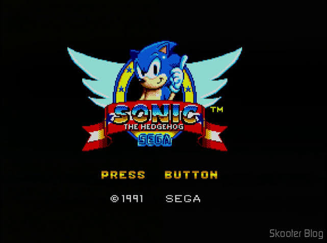

Um museu virtual da história dos videogames
Do TIA de 128 bytes do Atari 2600 aos SSDs do PS5. Explore consoles, dossiês de jogos marcantes, uma linha do tempo e laboratórios de gráficos e som — e jogue duas relíquias em canvas puro, direto no navegador.
A Jornada do Hardware
Explore as três frentes tecnológicas fundamentais que revolucionaram a indústria dos jogos eletrônicos.
Laboratório de Áudio
Síntese por modulação de frequência, canais PSG e chips lendários como o SID da Commodore e o YM2612 da Sega.

Evolução Gráfica
Da geometria vetorial e sprites em 8-bits às malhas poligonais aceleradas por hardware e iluminação realista.
Linha do Tempo
Cinco décadas de marcos históricos, guerras de consoles, quebras de paradigmas e lançamentos marcantes.
Asteroids
Gire com A/D ou as setas, acelere com W/Seta para cima e atire com Espaço. Sobreviva às ondas de asteroides.
Teclado: A/D ou ← → giram · W ou ↑ acelera · Espaço atira
Pong
Controle sua raquete com o mouse, o toque ou as teclas W/S. A CPU joga com uma leve margem de erro.
Mouse, toque ou teclas W / S